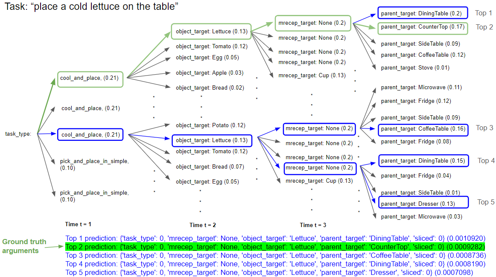

My final-year research investigates the future of Embodied Instruction Following (EIF), which involves the use of mobile manipulator robots that perform household tasks based on natural language instructions. EIF aims to bridge the gap between simulated environments and real-world applications, allowing robots to operate effectively in human spaces.
My research extends the capabilities of two state-of-the-art embodied agents, FILM and Prompter, addressing their limitations in handling high-level task instructions. I propose two novel methods that employ large language models (LLMs) to predict top promising action sequences and a reordering policy to optimize the selection from these sequences for partially observed environmental states.
Agents are evaluated against ALFRED dataset, a benchmark for learning a mapping from natural language instructions and egocentric vision to sequences of actions for household tasks. My proposed strategy is successful in surpassing both my baseline systems, significantly outperforming my baselines' state-of-the-art model, reaching a 48.59% success rate and claiming 13th place on a globally competitive leaderboard that features contributions from researchers around the world.
Figure 1: (a) Failure analysis of baseline model, (b) miscommunication errors in high-level task instructions.
Miscommunication between humans and agents continues to be a significant challenge in task-oriented interactions, as highlighted by failure analysis across dataset. These miscommunication errors often arise from ambiguously worded or contradictory high-level task instructions provided by humans. Objects that humans may view as similar or identical, are different to agents, especially in environments like THOR, as they are recognized as distinct objects. This discrepancy can lead to errors in task execution, where agents either interact with incorrect targets or fail to identify the correct ones, resulting in high rates of goal undetected errors. Although such scenarios mirror real-life communication challenges, expecting humans to overly simplify or alter their natural language use is impractical. Instead, there is a pressing need for agents to be developed with robust capabilities to interpret and navigate through these miscommunication errors effectively, ensuring more reliable and successful task completion.
Table 1: Example of miscommunication errors in high-level task instructions in the ALFRED dataset.
| Error Type | High Level Task | Ground Truths |
|---|---|---|
| (Ambiguous) Example A | "Turn on the living room lamp" | Task type: look at obj in light, object target: Vase, moveable receptacle target: None, parent target: None, sliced: 0 |
| (Ambiguous) Example B | "Put cup in the sink" | Task type: pick and place with movable recep, object target: Fork, moveable receptacle target: Cup, parent target: Sink Basin, sliced: 0 |
| (Contradicting) Example C | "Place a cold lettuce on the table" | Task type: cool and place, object target: Lettuce, moveable receptacle target: None, parent target: Counter Top, sliced: 0 |
| (Contradicting) Example D | "Put a cup with spoon on the counter to the left of the stove" | Task type: pick and place with movable recep, object target: Spoon, moveable receptacle target: Mug, parent target: Counter Top, sliced: 0 |
Ambiguity refers to tasks that are too vague or provide little to no helpful information while contradiction errors refer to instructions that contain information that deviates from the ground truth. Table 1 shows two examples each of both vague and contradicting instructions and their corresponding ground truths. Task type is one of the seven task types in the ALFRED dataset. Object targets refer to moveable objects that the agent should interact with. Moveable receptacles are items that the agent can use to put small items in to fulfill task type of stack and place. The parent target is a receptacle for the agent to place the object target on (the object target’s final destination). Lastly, the "sliced" argument represents if the task involves cutting/slicing objects with a knife. In Table 1 the high-level instruction of ambiguous example A tasks the agent to "turn on the living room lamp" but does not specify the need for the object target which in this case is a "Vase", as required by the ground truth for the task to succeed if executed correctly. The LLM used to predict the instruction arguments will not know that a "Vase" is required for this task and will ultimately result in a wrong or ’None’ type prediction (no target objects required which is impossible as every task in ALFRED requires interacting with a target object).
On the other hand, the table also demonstrates contradictions in the task dataset where different objects and moveable receptacles or parent targets were specified in the high-level instructions, which differ from the ground truths. In contradicting example C, the given human instruction tasks the agent to "place a cold lettuce on the table", which takes place in the scene of kitchen. This is vague and wrong according to the ground truth, and a clearer, correct task instruction aligning with its ground truth would be "place a cold lettuce on the countertop".
The failure analysis sets a basis of the goal of my FYP, which is to develop a methodolgy to handle these natural language miscommunication errors effectively and improve the success rate of the agent in executing high-level task instructions, ultimately surpassing my state-of-the-art baseline systems.
My proposed strategy enhances two key aspects of Prompter: language understanding and interaction planning. The language understanding component leverages the LLM to parse complex task instructions into multiple, task-specific arguments. These distilled instruction arguments are then relayed to the planner, which devises a tailored action plan for each set of instruction arguments to generate multiple action sequences. Following a partially observable Markov decision strategy, I utilized the agent’s egocentric vision and object recognition to formulate an optimal reordering policy. The policy captures the top action sequences from the language model and reorders them according to a sophisticated reordering policy, finally taking the best action sequence that suits the task according to the agent’s environment.
Figure 2: Considering top k candidates from the LLM rather than using greedy decoding to select the best action sequence.
I evaluate the performance of various language models I have trained to determine the most effective one. Through this comparison, I found the Text-to-text Transfer Tansformer (T5) model to be the most suitable for my strategy in addressing the ALFRED challenge. Subsequently, I further enhance the T5 model’s accuracy by applying a hyperparameter tuning, and beam search algorithm to refine its prediction capabilities. The beam search algorithm, by considering multiple hypotheses at once, allows for a more nuanced and comprehensive analysis of potential outcomes, significantly increasing the likelihood of selecting the most accurate instruction arguments. This enhanced approach not only streamlines the process by consolidating the need for multiple models into a singular, more capable model but also improves the overall efficiency and accuracy of the system. By integrating the T5 model with a beam search refinement, the strategy demonstrates a marked improvement in handling complex and vague instruction sets, thus providing a robust solution for the intricacies involved in solving the ALFRED challenge.
Figure 3: Beam search algorithm considers multiple hypotheses at once to refine the prediction of instruction arguments.
Unlike greedy algorithms which only keep the single best state, or breadth-first search, which expands all nodes, Beam Search balances between these approaches by maintaining a predefined width of the beam, denoted as B. This width controls the number of nodes expanded at each level of the search, allowing Beam Search to efficiently navigate through the vast search space of possible text sequences while mitigating the computational expense associated with breadth-first search. In the context of ALFRED, the Beam Search algorithm is utilized during the decoding phase, where the T5 model aims to generate a sequence of tokens (words) that form the instructional arguments.
At each time step, the model computes the probability of the next word from its vocabulary, given the previous words, and retains the top 5 words with the highest computed probability. For the sake of brevity and illustration, I have omitted other branches of the search space, and arbitrary probability values (shown in brackets) were used. For each of the top 5 words, another set of probabilities for the top 5 words are computed as well and the process repeats until the generated sentence encounters an end-of-sentence (EOS) token. The overall probabilities of the generated sentences are computed, forming subsequent beam predictions. From Figure 5.3, it can be observed that the top predictions generated from the task instruction are not always correct, and more exploration of the possible combinations in the search space is required, especially since the task instruction contradicts the ground truth.
Figure 4: The agent updates an object count vector during exploration to assess the likelihood of task completion for each action sequence
After obtaining a top k action sequences from the large language model, the reordering policy aims to select the optimal sequence that maximizes the likelihood of task completion. I introduce an initial exploration phase of 100 steps for the agent. During this phase, the agent does a random search of the environment to observe and compile a count of all visible objects, which is then used to initialize the object count vector. This vector is updated at each time step to reflect the current state of the environment.
Figure 5: At T = 100, the agent applies the reordering policy to select the best action sequence to execute the task: place lettuce on CounterTop.
Each action sequence is evaluated by calculating the likelihood of task completion based on the object count vector and the action sequence. It does so by assigning higher utility score to sequences whose objects were observed more frequently during the exploration phase, while penalizing sequences that require objects that were not observed. Unseen receptacles are penalized more heavily than unseen objects, due the the higher likelihood of unseen receptacles leading to task failure. The agent then selects the sequence with the highest utility score to execute.
By exploring the environment initially before deciding its best course of action, the agent gains critical insights into the current state, allowing it to strategically prioritize and select the most viable action sequence. This preliminary exploration is instrumental in navigating the complexities and uncertainties inherent in dynamic settings, ultimately leading to more informed and effective decision-making under uncertainty.
I employed ALFRED to evaluate my method. In ALFRED, environments are categorized into three splits: 'train,' 'validation,' and 'test.' Both the validation and test environments are split further into 'seen' and 'unseen' categories to evaluate how well the system generalizes. The main metric used is the success rate, referred to as 'SR,' which calculates the proportion of successfully completed tasks. Another important metric is the goal-condition success rate, abbreviated as 'GC,' which quantifies the proportion of goal conditions that have been met. Additionally, path-length-weighted (PLW) scores are used to adjust the SR and GC metrics based on the length of the actions performed by the agent.
My proposed method achieved a 48.59% success rate on the unseen test split, surpassing both my state-of-the-art baseline systems, in both components of language understanding and navigation. My agent also attained a ranking of 12th place on the ALFRED Challenge leaderboard, as of the time of this writing. The results demonstrate the effectiveness of my proposed methods in handling high-level task instructions and optimizing action sequences for partially observed environmental states.
Table 2: Comparative analysis of my model against my state-of-the-art baseline systems with underlined values indicating the best performance in each comparison.
| Metrics | My Agent | Prompter | FILM |
|---|---|---|---|
| Validation Unseen Set: | |||
| Total Episodes: 821 | |||
| Success Rate (SR) | 0.555 | 0.533 | 0.201 |
| Goal Condition (GC) Success | 0.654 | 0.630 | 0.325 |
| PLWSR | 0.137 | 0.196 | NA |
| PLWGC | 0.158 | 0.217 | NA |
| Test Unseen Set: | |||
| Total Episodes: 1529 | |||
| Leaderboard Ranking | 13 | 19 | 27 |
| Success Rate (SR) | 0.486 | 0.426 | 0.265 |
| Goal Condition (GC) Success | 0.598 | 0.588 | 0.364 |
| Path Length Weighted SR (PLWSR) | 0.155 | 0.208 | 0.106 |
| Path Length Weighted GC (PLWGC) | 0.190 | 0.262 | 0.143 |